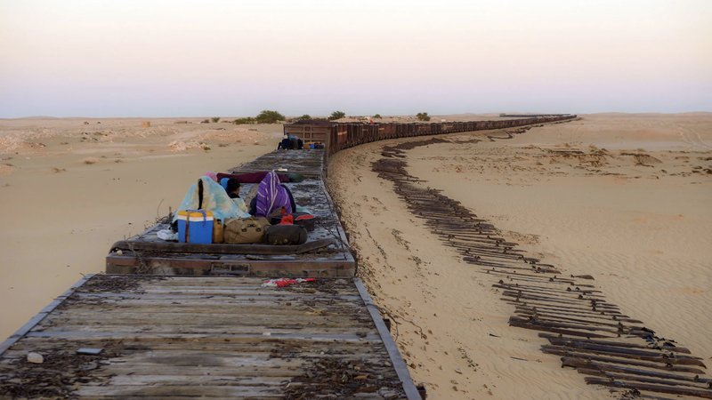
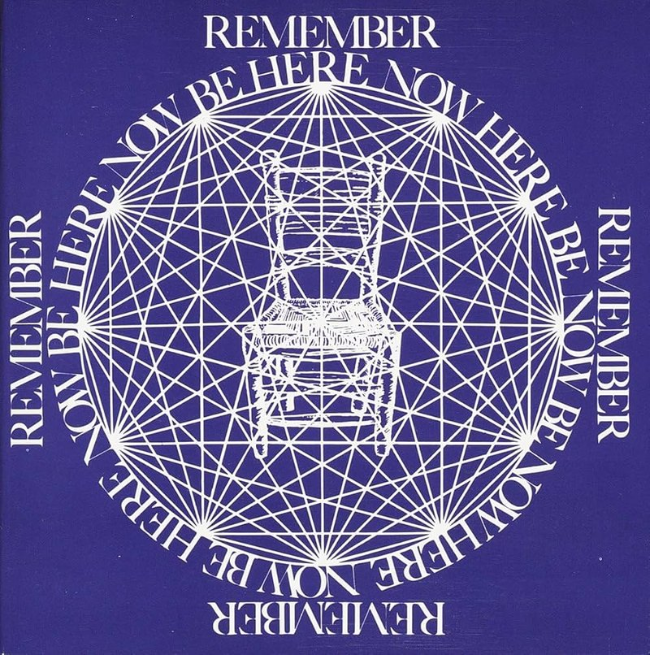
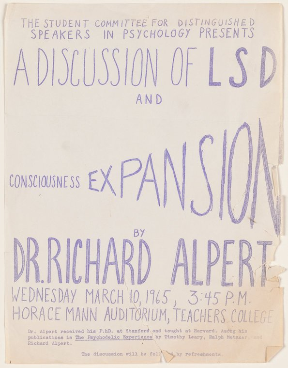
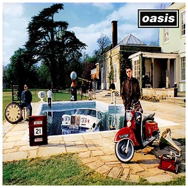
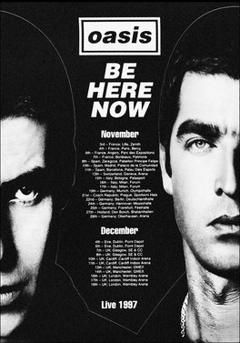

July 25, 2026
“I am allergic to those words,” Pope Francis said of adjectives, while giving his views on language to the Vatican communications team.
When you catch an adjective, kill it.
Illeism (/ˈɪli.ɪzəm/; from Latin ille: “he; that man”) is the act of referring to oneself in the third person instead of first person. It is sometimes used in literature as a stylistic device. In real-life usage, illeism can reflect a number of different stylistic intentions or involuntary circumstances.
July 24, 2026
…it is also an unforgiving and ceaseless assault on the body and senses. The booming and grinding; the constant tremors rippling through the body; the grit swirling through your hair in the hot breeze; the desert sun pricking your eyelids; and a constant elemental symphony of heat, wind and noise.

July 23, 2026
Organic life beneath the shoreless waves
Was born and nurs'd in ocean's pearly caves;
First forms minute, unseen by spheric glass,
Move on the mud, or pierce the watery mass;
These, as successive generations bloom,
New powers acquire and larger limbs assume;
Whence countless groups of vegetation spring,
And breathing realms of fin and feet and wing.
Bernard Stevens: Those Northern Lights are some kind of weird psychic, something?
Chris Stevens: Yeah.
Bernard Stevens: What causes them to do that?
Chris Stevens: Well, this is just my guess, but I think that high speed electrons and protons from the sun are trapped in the van Allen radiation belt. Then they're channeled through the Polar Regions by the earth's magnetic field where they collide with other particles and create a brilliant luminosity.
Bernard Stevens: What does that have to do with us?
Chris Stevens: I swear man, I don't know.
“Evil spirits love not the smell of lamps,” as Plato put it.
Roger Ekirch notes in his book At Day's Close: Night in Times Past (2005)
“Rather than falling, night, to the watchful eye, rises,” writes Ekirch in At Day's Close.
Shadows creep up lows and valleys first, then consume hillsides and houses and the tallest buildings.
L. Paris; H. Bond; J. Jacobs Brumberg. A Paradise for Boys and Girls: Adirondack Summer Camps. Syracuse and Blue Mountain Lake, New York: Syracuse University Press, 2006.
There's no point to a trimmed and well-groomed beard, which resembles exactly the sort of suburban lawn that often led to the growing of the beard in the first place. (That's why my hero among this year's pennant-winning crop is Mike Napoli, whose dense and colorful beard is as gonzo as his all-or-nothing, free-swinging style at the plate.) One of the beauties of the beard is that its lushness is polysemic, lending itself to an interpretive exuberance to match its flow.
A 2019 study arguing that T. rex and other theropod dinosaurs may have cooled their brains through blood-vessel-rich tissues in openings on the roof of the skull, called dorsotemporal fenestrae. Paleontologists had long assumed those spaces were mainly for jaw muscles, but the smooth bone and awkward muscle geometry made that explanation less convincing.
Researchers compared dinosaur skulls with those of living alligators and birds and found that the equivalent spaces often contain fat and dense networks of blood vessels. Thermal-camera observations of alligators showed those areas becoming warmer or cooler relative to the rest of the head, suggesting they act like heat exchangers: releasing excess heat when the animal is hot and absorbing heat when it is cold.
For a huge predator such as T. rex, this would have helped keep the brain and eyes at a stable temperature, especially if theropods had relatively high metabolisms.
Holliday, Porter, Vliet & Witmer, “The Frontoparietal Fossa and Dorsotemporal Fenestra of Archosaurs,” The Anatomical Record, 2019.
In “Be Here Now,”1 you write about going to an ashram in India and spending months in deep meditation. Most of us can't drop out like that and can find it hard enough to not check our phones every five minutes or get away from work email for a day, let alone spend hours a night focusing on breathing, as you did. All of which is a preamble to asking: Is modern Western life anathema to the effort needed for the kind of spiritual development you espouse?
Yes. Thoughts, thoughts, thoughts: Those are the daily attention-grabbers that make it so that you can't come from your mind to your heart to your soul. The soul contains love, compassion, wisdom, peace and joy, but most people identify with the mind. You're not an ego. You're a soul. You're not psychologically full of anxiety and fear.
1 I would never argue that the contents of “Be Here Now” have a ton to offer as a systematic philosophy, but there is something comforting about its litany of exhortations, like “When you know how to listen, everybody is the guru.”



